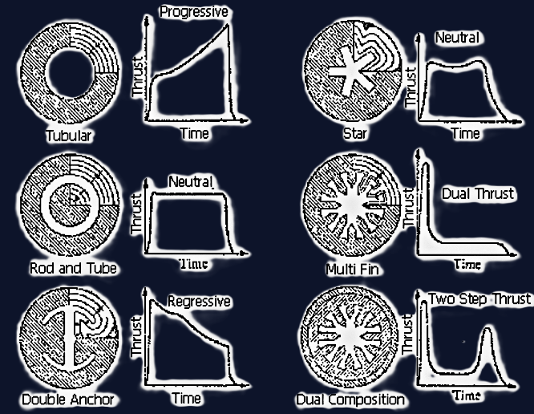

Rocket TheoryTeoría de cohetes
This page summarizes key concepts and equations related to rocket design, propulsion, and performance. They are the basis of solid propulsion, and any rocket propulsion engineer should know them. However, it is never a bad time to refresh our memory!Esta página resume conceptos y ecuaciones clave del diseño, la propulsión y las actuaciones de un cohete. Son la base de la propulsión sólida y cualquier ingeniero de propulsión debería conocerlos. ¡Aun así, nunca viene mal refrescar la memoria!
Rocket Design and PerformanceDiseño y actuaciones de un cohete
The Rocket EquationLa ecuación del cohete
The ideal velocity gain imparted by a propulsion system is described by the Tsiolkovsky Rocket Equation. It actually relates the change of velocity of a rocket to the mass ratio before and after the burn.La ganancia ideal de velocidad que proporciona un sistema propulsivo se describe con la ecuación de Tsiolkovsky. Relaciona el cambio de velocidad de un cohete con la relación de masas antes y después del encendido.
$$\Delta V_{id}=g_{e}I_{sp}\ln\left(\frac{m_{o}}{m_{f}}\right)=\Delta V+\Delta V_{g}+\Delta V_{D}+\Delta V_{S}$$
- $\Delta V_{id}$: Real velocity gain.$\Delta V_{id}$: ganancia real de velocidad.
- $\Delta V$: Mission requirements.$\Delta V$: requisitos de la misión.
- $\Delta V_{g}$: Gravity losses, calculated as $\int_{0}^{t} g(t) dt$.$\Delta V_{g}$: pérdidas por gravedad, calculadas como $\int_{0}^{t} g(t) dt$.
- $\Delta V_{D}$: Drag losses, calculated as $\int_{0}^{t} \frac{D}{m} dt$.$\Delta V_{D}$: pérdidas por resistencia aerodinámica, calculadas como $\int_{0}^{t} \frac{D}{m} dt$.
- $\Delta V_{S}$: Steering losses.$\Delta V_{S}$: pérdidas por guiado.
- $m_{o}$: Initial mass of the rocket.$m_{o}$: masa inicial del cohete.
- $m_{f}$: Final mass of the rocket.$m_{f}$: masa final del cohete.
Some simplified models and first approximations often neglect the complex terms to get a rough estimation of the propulsive capabilities. Did you know that we need 11.2 km/s to escape Earth gravity?Algunos modelos simplificados y primeras aproximaciones desprecian los términos complejos para obtener una estimación aproximada de la capacidad propulsiva. ¿Sabías que hacen falta 11,2 km/s para escapar de la gravedad terrestre?
Structural Efficiency and Mass RatiosEficiencia estructural y relaciones de masas
Structural efficiency is measured by the propellant mass fraction ($\xi$). Basically, we want it as close to one as possible since we wnt as much propellant as possible in the rocket.La eficiencia estructural se mide con la fracción másica de propulsante ($\xi$). Básicamente, queremos que sea lo más cercana a uno posible, porque queremos llevar en el cohete tanto propulsante como sea posible.
$$\xi = \frac{m_{p}}{m_{p} + m_{i}}$$
- $m_{p}$: Propellant mass.$m_{p}$: masa de propulsante.
- $m_{i}$: Inert mass (structural mass).$m_{i}$: masa inerte (masa estructural).
- $m_{pl}$: Payload mass.$m_{pl}$: masa de la carga útil.
The mass ratio, $MR$, can be defined for any stage $i$ as:La relación de masas, $MR$, se puede definir para cualquier etapa $i$ como:
$$MR_{i}=\frac{m_{o}}{m_{f}}=\frac{m_{pl}+m_{p}+m_{i}}{m_{pl}+m_{i}}$$
For a given stage, the propellant mass can be expressed as follows. If we recall the rocket equation, we can now compute the propellant we need to escape any body based on the inert mass and our payload. Pretty neat, right?Para una etapa dada, la masa de propulsante se puede expresar como sigue. Si recordamos la ecuación del cohete, ya podemos calcular el propulsante necesario para escapar de cualquier cuerpo a partir de la masa inerte y de nuestra carga útil. Bastante elegante, ¿verdad?
$$m_{p_{i}}=m_{pl_{i}}\frac{MR_{i}-1}{MR_{i}-1 / R_{i}}$$
Rocket PropulsionPropulsión de cohetes
Thrust EquationEcuación del empuje
The thrust, $T$, of a rocket motor is given by the following equation. It can be derived using fluid mechanics principles, by using a control volume approach and applying the integral form of the Navier-Stokes equations.El empuje, $T$, de un motor cohete viene dado por la siguiente ecuación. Se puede deducir con los principios de la mecánica de fluidos, usando un volumen de control y aplicando la forma integral de las ecuaciones de Navier-Stokes.
$$T=\dot{m}_{e}U_{e}+(P_{e}-P_{a})A_{e}$$
- $\dot{m}_{e}$: Mass flow rate.$\dot{m}_{e}$: gasto másico.
- $U_{e}$: Exhaust velocity.$U_{e}$: velocidad de salida.
- $P_{e}$: Exhaust pressure.$P_{e}$: presión de salida.
- $P_{a}$: Ambient pressure.$P_{a}$: presión ambiente.
- $A_{e}$: Exhaust area.$A_{e}$: área de salida.
The propulsive system is the most efficient when when $P_e=P_a$, condition known as the perfectly expanded. In a vacuum, $P_a=0$, so the thrust is maximized as the pressure term contribution is the largest.El sistema propulsivo es más eficiente cuando $P_e=P_a$, condición conocida como tobera adaptada. En el vacío, $P_a=0$, así que el empuje es máximo, porque la contribución del término de presión es la mayor.
Specific ImpulseImpulso específico
Specific Impulse, $I_{sp}$, is a measure of the efficiency of a rocket engine and is defined as:El impulso específico, $I_{sp}$, mide la eficiencia de un motor cohete y se define como:
$$I_{sp}=\frac{T}{\dot{m}g_{e}}$$
This value is key to compare rocket performance, since it relates thrust to propellant consumption. Higher specific impulse indicates a more efficient engine.Este valor es clave para comparar las actuaciones de distintos cohetes, ya que relaciona el empuje con el consumo de propulsante. Un impulso específico mayor indica un motor más eficiente.
Characteristic Velocity and Thrust CoefficientVelocidad característica y coeficiente de empuje
Characteristic velocity, $c^{*}$, is a measure of the performance of a propellant. It varies depending on the composition of the fuel.La velocidad característica, $c^{*}$, mide las prestaciones de un propulsante. Varía según la composición del combustible.
$$c^{*}=\sqrt{\frac{g_{e}RT_{c}}{\gamma}}\left(\frac{2}{\gamma+1}\right)^{\frac{\gamma+1}{2(\gamma-1)}}$$
The mass flow rate, $\dot{m}$, is related to $c^{*}$ by: $$\dot{m} = \frac{P_{c}A_{t}}{c^{*}}$$El gasto másico, $\dot{m}$, se relaciona con $c^{*}$ mediante: $$\dot{m} = \frac{P_{c}A_{t}}{c^{*}}$$
Solid Rocket MotorsMotores cohete de propulsante sólido
Solid rocket motors use a single solid propellant grain. Here, both the oxidizer and the fuel are combined into a single solid, using a binder for stability. This is the one I am the most qualified to talk about, since I did my final year thesis on them. The key equation relates the burning rate to the chamber pressure using Vieille's law:Los motores de propulsante sólido usan un único grano sólido. En él, oxidante y combustible se combinan en un solo sólido, con un aglutinante que le da estabilidad. Es el tipo del que más puedo hablar, porque mi trabajo de fin de grado trató sobre ellos. La ecuación clave relaciona la velocidad de combustión con la presión de cámara mediante la ley de Vieille:
$$\dot{r} = aP_{c}^{n}$$
The chamber pressure, $P_c$, is a function of the propellant properties, port area, and throat area. At steady state operation, the mass flow rate does not accumulate in the combustion chamber, and the one mass generated by the fuel ignition exits the throat. In this case we obtain the following equation for pressure. Of course, at ignition this is not true. In addition, the nozzle is not chocked yet, so we need to set an ordinary differential equation to describe the evolution of the mass in the chamber.La presión de cámara, $P_c$, depende de las propiedades del propulsante, del área del puerto y del área de garganta. En régimen estacionario no se acumula masa en la cámara de combustión: toda la masa que genera la combustión del grano sale por la garganta. En ese caso obtenemos la siguiente ecuación para la presión. Por supuesto, durante el encendido esto no se cumple; además, la tobera todavía no está bloqueada, así que hay que plantear una ecuación diferencial ordinaria que describa la evolución de la masa en la cámara.
$$P_{c}=\left[\frac{a\rho_{p}A_{s}c^{*}}{g_{e}A_{t}}\right]^{\frac{1}{1-n}}$$
During steady operation for a given geometry and fuel, the pressure in the chamber only depends on the surface of the fuel exposed to the combustion, and subjected to ablation. using this, we can predict the pressure history based on the grain geometry. This picture explains it:En régimen estacionario, para una geometría y un propulsante dados, la presión en la cámara solo depende de la superficie del grano expuesta a la combustión y sometida a ablación. Con esto podemos predecir la historia de presiones a partir de la geometría del grano. Esta imagen lo explica:

By the way, this image is from nakka-rocketry. They go much deeper than me and are worth checking their page!Por cierto, esta imagen es de nakka-rocketry. Profundizan mucho más que yo y merece la pena visitar su página.
Hybrid RocketsCohetes híbridos
Hybrid RocketsCohetes híbridos
Hybrid rockets use a solid fuel and a liquid oxidizer. This time, the solid fuel usually has cylindrical ports through its length. The oxidizer is released and its flow rate can be controlled to regulate the combustion. This is why the regression rate is often defined by the oxidizer mass flux:Los cohetes híbridos usan un combustible sólido y un oxidante líquido. En este caso, el combustible sólido suele tener puertos cilíndricos a lo largo de toda su longitud. El oxidante se inyecta y su gasto se puede controlar para regular la combustión. Por eso la velocidad de regresión se suele definir en función del flujo másico de oxidante:
$$\dot{r} = aG_{ox}^{n}$$
where $G_{ox} = \frac{\dot{m}_{ox}}{A_{p}}$ and $A_{p}$ is the port area.donde $G_{ox} = \frac{\dot{m}_{ox}}{A_{p}}$ y $A_{p}$ es el área del puerto.
Liquid Rocket EnginesMotores cohete de propulsante líquido
Liquid rockets use liquid propellants. There are many types being used today by big companies such as SpaceX. They offer the largest controllability and thrust of the industry, which makes them the go-to option for launchers.Los cohetes de propulsante líquido usan propulsantes líquidos. Hay muchos tipos en uso hoy en día por grandes empresas como SpaceX. Son los que ofrecen mayor controlabilidad y empuje de la industria, lo que los convierte en la opción de referencia para los lanzadores.
Types of Propellant Feeding SystemsTipos de sistemas de alimentación de propulsante
There are several ways to feed propellants into a liquid rocket engine. Each one provides its advantages and disadvantages in terms of control, complexity, thrust...:Hay varias formas de alimentar de propulsante un motor cohete líquido. Cada una tiene sus ventajas e inconvenientes en cuanto a control, complejidad, empuje...:
- Cold Gas Thrusters: These are the simplest, using a compressed inert gas like nitrogen. They offer low thrust and are primarily used for attitude control.Propulsores de gas frío: son los más sencillos y usan un gas inerte comprimido, como el nitrógeno. Dan poco empuje y se usan sobre todo para el control de actitud.
- Pressure-Fed: Propellants are forced from tanks into the combustion chamber using a high-pressure inert gas. This is a simple and reliable method, but the tanks must be very strong and heavy, limiting its use to smaller engines.Alimentación por presión: los propulsantes se empujan desde los tanques hasta la cámara de combustión con un gas inerte a alta presión. Es un método sencillo y fiable, pero los tanques deben ser muy resistentes y pesados, lo que limita su uso a motores pequeños.
- Pump-Fed: The most common method for high-thrust engines, where pumps are used to deliver propellants from the tanks to the combustion chamber. This allows for lighter tanks, as they don't need to withstand high pressure.Alimentación por bombas: el método más habitual en motores de gran empuje, en el que unas bombas llevan los propulsantes de los tanques a la cámara de combustión. Así los tanques pueden ser más ligeros, ya que no tienen que soportar altas presiones.
Engine Cycles: Open vs. ClosedCiclos del motor: abierto frente a cerrado
The engine cycle describes how the turbopumps, which feed the propellants, are powered.El ciclo del motor describe cómo se accionan las turbobombas que alimentan los propulsantes.
- Open Cycle (Gas Generator): A small amount of propellant/Ox is bled from the main tanks and burned in a separate gas generator to create hot gas. This gas then drives the turbopumps before being exhausted overboard. This simplifies the design but results in a slight loss of efficiency, as part of the mass is dumped.Ciclo abierto (generador de gas): se sangra una pequeña cantidad de propulsante/oxidante de los tanques principales y se quema en un generador de gas independiente para producir gas caliente. Ese gas mueve las turbobombas y luego se expulsa al exterior. Simplifica el diseño, pero supone una ligera pérdida de eficiencia, ya que parte de la masa se desecha.
- Closed Cycle (Staged Combustion): All propellant/Ox is routed back into the main combustion chamber after driving the turbopumps. This is more complex but more efficient, as no propellant is wasted.Ciclo cerrado (combustión por etapas): todo el propulsante/oxidante vuelve a la cámara de combustión principal después de mover las turbobombas. Es más complejo, pero más eficiente, porque no se desperdicia propulsante.
Closed-Cycle Variations: Fuel Flow, Oxidizer Flow, and Full FlowVariantes del ciclo cerrado: rico en combustible, rico en oxidante y flujo completo
Closed-cycle engines are further divided by which propellant is used to power the turbopumps:Los motores de ciclo cerrado se dividen a su vez según qué propulsante se usa para mover las turbobombas:
-
Fuel-Rich Staged Combustion:Combustión por etapas rica en combustible:
A preburner runs fuel-rich to drive the turbine and its hot exhaust then completes combustion in the main chamber. It possesses very high efficiency and achievable chamber pressures and allows turbomachinery to operate in a less oxidizing environment. However there is a risk of carbon deposits and turbomachinery fouling, requiring a demanding cooling system.Un prequemador funciona rico en combustible para mover la turbina, y sus gases calientes completan la combustión en la cámara principal. Tiene una eficiencia y unas presiones de cámara alcanzables muy altas, y permite que la turbomaquinaria trabaje en un entorno menos oxidante. Sin embargo, existe riesgo de depósitos de carbono y de ensuciamiento de la turbomaquinaria, lo que exige un sistema de refrigeración exigente.
-
Oxidizer-Rich Staged Combustion:Combustión por etapas rica en oxidante:
A preburner runs oxidizer-rich to produce an oxygen-rich drive gas for the turbine, which then feeds the main chamber. This technique is still very efficient and avoids common problems related to fuel-rich gases. However, it creates an extremely oxidizing turbine environment that requires oxidation-resistant materials and complex cooling/ metallurgy. There is also a higher risk of explosion.Un prequemador funciona rico en oxidante para producir un gas de accionamiento rico en oxígeno para la turbina, que después alimenta la cámara principal. Sigue siendo muy eficiente y evita los problemas habituales de los gases ricos en combustible. Sin embargo, crea un entorno extremadamente oxidante en la turbina que requiere materiales resistentes a la oxidación y una refrigeración y metalurgia complejas. También hay mayor riesgo de explosión.
-
Full-Flow Staged Combustion (FFSC):Combustión por etapas de flujo completo (FFSC):
Two preburners (one fuel-rich, one oxidizer-rich) route all propellant through turbines before entering the main chamber. It possesses the highest theoretical efficiency and a lower turbine inlet temperatures per turbine improving turbomachinery life. It also allows to reach very high chamber pressures. Despite this, it has greater complexity with more components, plumbing and controls, leading to higher development cost and assembly challenges.Dos prequemadores (uno rico en combustible y otro rico en oxidante) hacen pasar todo el propulsante por las turbinas antes de entrar en la cámara principal. Tiene la mayor eficiencia teórica y temperaturas de entrada a cada turbina más bajas, lo que alarga la vida de la turbomaquinaria. También permite alcanzar presiones de cámara muy altas. A cambio, es más complejo, con más componentes, tuberías y controles, lo que encarece el desarrollo y complica el montaje.